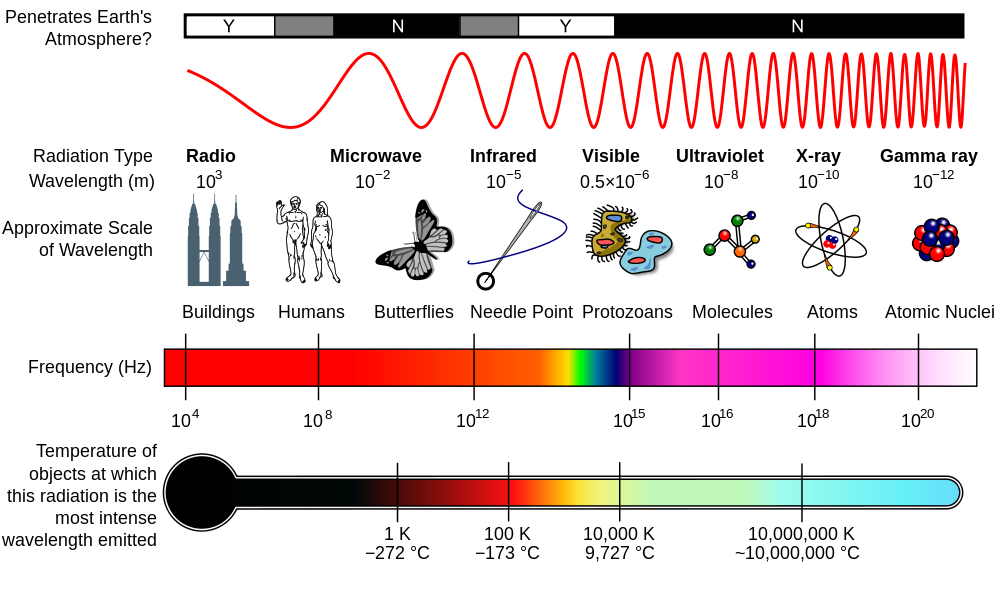
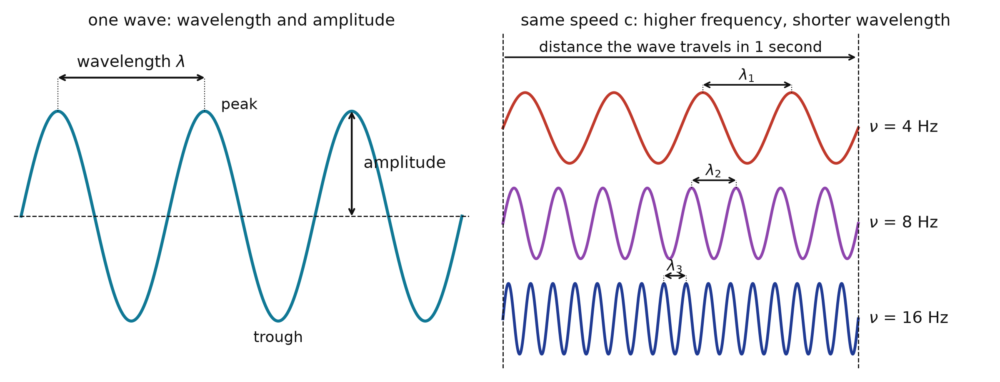
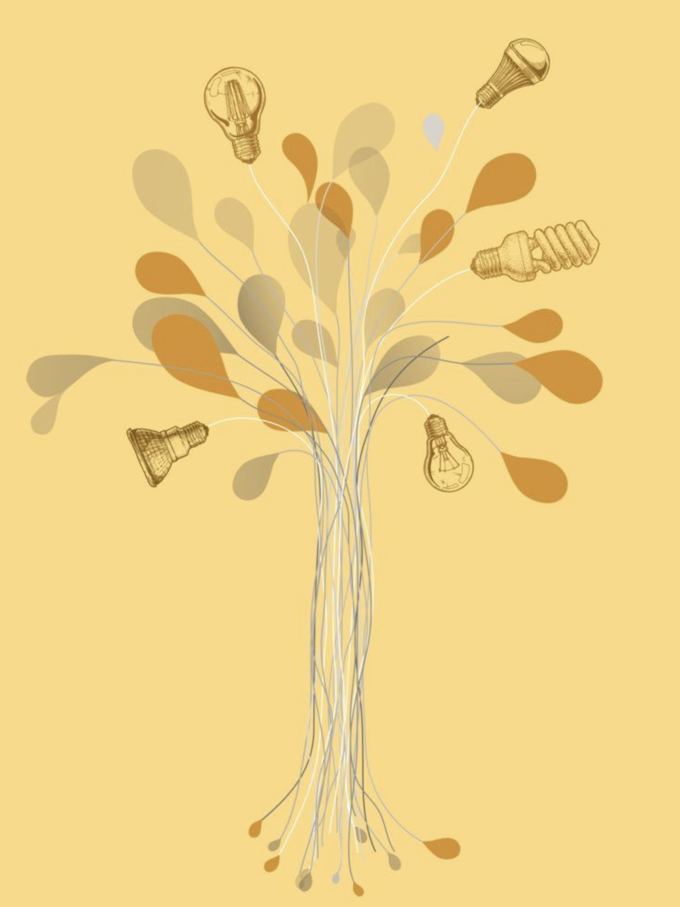
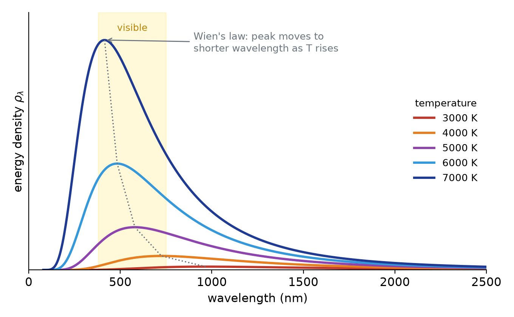
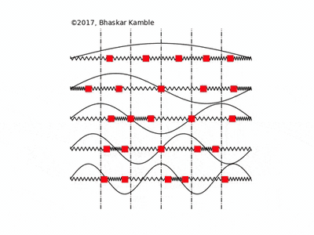
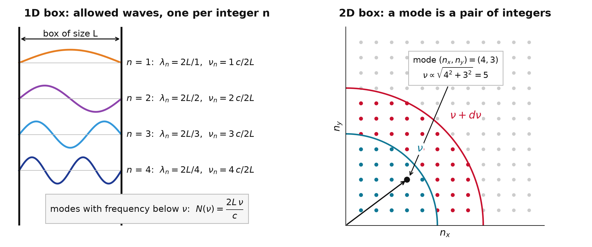
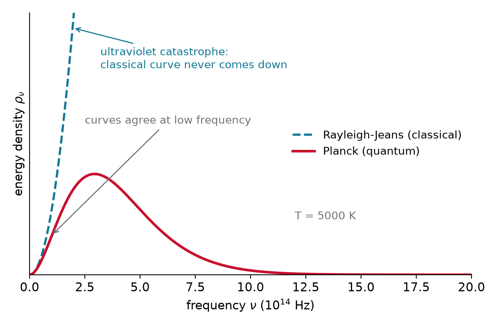
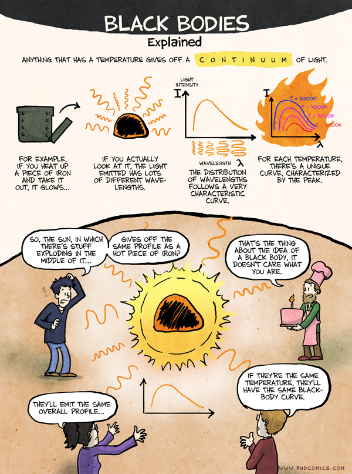

The Need for Quantization
Chem 3240 · Lecture 1.2
Davit Potoyan
What is the nature of light?

- Light as a traveling electromagnetic wave
- Perpendicular electric and magnetic components
- Needs no medium, travels in vacuum at speed c
- This wave picture is not the whole story
The electromagnetic spectrum

- Visible light is a narrow band
- High frequency carries more energy (X-rays, gamma)
- Low frequency carries less energy (microwave, radio)
- Clear link between an object’s temperature and its radiation
Frequency, wavelength, speed of light

\lambda \nu = c \qquad c = 3 \cdot 10^8 \, \text{m/s}
- Key question: how does the energy E of light relate to its frequency \nu?
How a light bulb started quantum mechanics

- 1887: Siemens and Helmholtz found the PTR in Berlin, the first national standards lab, to serve German industry
- Its customer: the electric lighting business. How much light does a glowing filament give per watt, and at what temperature?
- 1890s: Lummer, Pringsheim, Rubens, Kurlbaum measure black body spectra with unmatched precision, deep into the infrared
- October 1900: Wien’s formula fails at long wavelengths; Rubens tells Planck on a Sunday; Planck has the right formula by evening
- December 1900: the only derivation that works needs E = h\nu. Planck: “an act of desperation”
- The full story, with the people and instruments (video)
The black body

- Idealized model: absorbs and emits every wavelength
- In thermal equilibrium at temperature T
- Emitted spectrum set only by T
- Heating up: intensity rises, peak shifts to shorter \lambda, color goes red to white to blue
The recipe for a radiation spectrum
\rho_{\nu}(T)\, d\nu = \underbrace{\langle E \rangle}_{\text{energy per mode}} \times \underbrace{dN_{\nu}}_{\text{number of modes}}
- A mode is one standing wave that fits in the box, like one harmonic of a guitar string; each mode has its own frequency
- Energy at frequency \nu = average energy of one mode \times number of modes at that frequency
- Average mode energy \langle E\rangle is thermodynamics: what the waves are, how much energy each holds. This is where classical and quantum physics part ways
- Number of modes dN_\nu is geometry: how many standing waves fit in a box. Same classically and quantum
Average mode energy, the classical way

- Heated atoms vibrate like springs, radiating at frequency \nu
- Equipartition: every oscillator gets the same energy, whatever its frequency \langle E\rangle = k_BT
- The same k_BT for a slow, long wave and a fast, short one. Hold that thought
Number of modes: counting the waves in a box

- Only whole half-waves fit: \lambda_n = 2L/n
- Shorter waves fit more easily: N \sim L/\lambda \sim \nu in 1D
- In 3D the wave must fit along each direction, so N \sim \nu^3
- A thin slice of frequency holds dN_{\nu} = \frac{8\pi}{c^3}\,\nu^2\, d\nu
The ultraviolet catastrophe

- Energy per mode \times modes, the Rayleigh-Jeans law: \rho(\nu) = k_B T \cdot \frac{8\pi}{c^3}\nu^2
- It shoots to infinity at high \nu: a light bulb could destroy the universe
- The mode count is solid geometry, so the average energy must be wrong
Live: heat it up
Planck vs Rayleigh-Jeans (classical), plotted per unit frequency; shaded band is visible light, dotted line is the peak
{
const h = 6.626e-34, c = 2.998e8, kB = 1.381e-23;
const nus = d3.range(0.02, 30, 0.05); // in units of 1e14 Hz
const planck = nus.map(n => { const nu = n * 1e14; return {x: n, y: 8 * Math.PI * h * Math.pow(nu, 3) / Math.pow(c, 3) / Math.expm1(h * nu / (kB * Tbb))}; });
const rj = nus.map(n => { const nu = n * 1e14; return {x: n, y: 8 * Math.PI * Math.pow(nu, 2) * kB * Tbb / Math.pow(c, 3)}; });
const ymax = 1.6 * d3.max(planck, d => d.y);
const nuPeak = 5.879e10 * Tbb / 1e14; // Wien's law in frequency form
return Plot.plot({
width: 1000, height: 360,
x: {label: "frequency (10^14 Hz)", domain: [0, 30]},
y: {label: "energy density per unit frequency", domain: [0, ymax], ticks: 0},
marks: [
Plot.rect([{x1: 4.0, x2: 7.9, y1: 0, y2: ymax}], {x1: "x1", x2: "x2", y1: "y1", y2: "y2", fill: "gold", fillOpacity: 0.15}),
Plot.ruleX([nuPeak], {stroke: "#999", strokeDasharray: "2,3"}),
Plot.line(rj, {x: "x", y: "y", stroke: "#7fb3d5", strokeWidth: 2, strokeDasharray: "6,4", clip: true}),
Plot.line(planck, {x: "x", y: "y", stroke: "#C8102E", strokeWidth: 2.5})
]
});
}Planck’s trick: quantization
In 1900 Planck postulated that an oscillator can hold only discrete amounts of energy:
\boxed{E = n\,h\nu}, \qquad n = 0, 1, 2, \ldots
- Planck’s constant: h = 6.63 \cdot 10^{-34} \, \text{J} \cdot \text{s}
- Atoms absorb and emit radiation in quanta, multiples of h\nu
- h is tiny, so quantization is invisible at the macro scale (classical limit h \to 0)
Planck’s law: same recipe, new average energy
Quantized oscillators give a frequency-dependent average energy (Boltzmann-weighted sum over n): \langle E \rangle = \frac{h\nu}{e^{\frac{h\nu}{ kT}} - 1} \qquad \Big(\to k_BT \text{ for } h\nu \ll k_BT\Big)
Energy per mode \times modes, with the mode count untouched:
\rho_{\nu}(T) = \frac{8\pi \nu^2}{c^3} \cdot \frac{h\nu}{e^{\frac{h\nu}{kT}} - 1}
- The exponential beats the \nu^2: the curve comes down, the total is finite (\propto T^4)
Wien’s displacement law

- Peak wavelength is inversely proportional to temperature:
\lambda_{max} = \frac{b}{T}
- b = 2.898 \cdot 10^{-3} \, m \cdot K
- Connects an object’s temperature to its color
- Hotter object: shorter \lambda_{max} (bluer)
Takeaway
A spectrum is modes times energy per mode. Classical equipartition gives every mode k_BT and the ultraviolet catastrophe; Planck’s E = nh\nu starves the high-frequency modes, cures the catastrophe, and starts quantum mechanics.
Chem 3240 · Quantum Mechanics